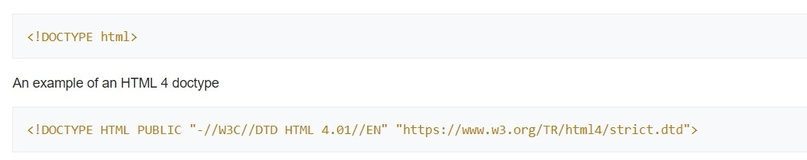

Introduction to HTMLHypertext Markup Language (HTML) is the standard markup language for creating web pages and web applications. With Cascading Style Sheets (CSS) and JavaScript, it forms a triad of cornerstone technologies for the World Wide Web. Web browsers receive HTML documents from a web server or from local storage and render the documents into multimedia web pages. HTML describes the structure of a web page semantically and originally included cues for the appearance of the document. HTML elements are the building blocks of HTML pages. With HTML constructs, images and other objects such as interactive forms may be embedded into the rendered page. HTML provides a means to create structured documents by denoting structural semantics for text such as headings, paragraphs, lists, links, quotes and other items. HTML elements are delineated by tags, written using angle brackets. Tags such as <img /> and <input /> directly introduce content into the page. Other tags such as surround and provide information about document text and may include other tags as
sub-elements. Browsers do not display the HTML tags, but use them to interpret the content of the page. HTML can embed programs written in a scripting language such as JavaScript,
which affects the behavior and content of web pages. Inclusion of CSS defines the look and layout of content. The World Wide Web Consortium (W3C), maintainer of both the HTML and
the CSS standards, has encouraged the use of CSS over explicit presentational HTML since 1997. HistoryDevelopment
In 1980, physicist Tim Berners-Lee, a contractor at CERN, proposed and prototyped ENQUIRE, a system for CERN researchers to use and share documents. In 1989, Berners-Lee wrote
a memo proposing an Internet-based hypertext system.Berners-Lee specified HTML and wrote the browser and server software in late 1990. That year, Berners-Lee and CERN data
systems engineer Robert Cailliau collaborated on a joint request for funding, but the project was not formally adopted by CERN. In his personal notes from 1990 he listed
"some of the many areas in which hypertext is used" and put an encyclopedia first. Markup
HTML markup consists of several key components, including those called tags (and their attributes), character-based data types, character references and entity references.
HTML tags most commonly come in pairs like <h1> and </h1>, although some represent empty elements and so are unpaired, for example <img>. The first tag in such
a pair is the start tag, and the second is the end tag (they are also called opening tags and closing tags). Another important component is the HTML document type declaration,
which triggers standards mode rendering. The text between <html> and </html> describes the web page, and the text between and is the visible page content. The markup text <title>This is a title</title> defines the browser page title. The Document Type Declaration <!DOCTYPE html> is for HTML5.If a declaration is not included, various browsers will revert to "quirks mode" for rendering. Elements HTML documents imply a structure of nested HTML elements. These are indicated in the document by HTML tags, enclosed in angle brackets thus: <p>. In the simple, general case, the extent of an element is indicated by a pair of tags: a "start tag" <p> and "end tag" </p>. The text content of the element, if any, is placed between these tags. Tags may also enclose further tag markup between the start and end, including a mixture of tags and text. This indicates further (nested) elements, as children of the parent element. The start tag may also include attributes within the tag. These indicate other information, such as identifiers for sections within the document, identifiers used to bind style information to the presentation of the document, and for some tags such as the <img> used to embed images, the reference to the image resource. Some elements, such as the line break <br>, do not permit any embedded content, either text or further tags. These require only a single empty tag (akin to a start tag) and do not use an end tag. Many tags, particularly the closing end tag for the very commonly used paragraph element <p>, are optional. An HTML browser or other agent can infer the closure for the end of an element from the context and the structural rules defined by the HTML standard. These rules are complex and not widely understood by most HTML coders. The general form of an HTML element is therefore: <tag attribute1="value1" attribute2="value2">''content''</tag>. Some HTML elements are defined as empty elements and take the form <tag attribute1="value1" attribute2="value2">. Empty elements may enclose no content, for instance, the <br> tag or the inline <img> tag. The name of an HTML element is the name used in the tags. Note that the end tag's name is preceded by a slash character, /, and that in empty elements the end tag is neither required nor allowed. If attributes are not mentioned, default values are used in each case. Element Examples
Header of the HTML document: <head>...</head>. The title is included in the head, for example: Paragraphs Line breaks: <br>. The difference between <br> and <p> is that br breaks a line without altering the semantic structure of the page, whereas p sections the page into paragraphs.
Note also that br is an empty element in that, although it may have attributes, it can take no content and it may not have an end tag.
This is a link in HTML. To create a link the tag is used. The href attribute holds the URL address of the link.
Inputs: There are many possible ways a user can give input/s like: Comments
Comments can help in the understanding of the markup and do not display in the webpage. Character and entity references As of version 4.0, HTML defines a set of 252 character entity references and a set of 1,114,050 numeric character references, both of which allow individual characters to be written via simple markup, rather than literally. A literal character and its markup counterpart are considered equivalent and are rendered identically. The ability to "escape" characters in this way allows for the characters < and & (when written as < and &, respectively) to be interpreted as character data, rather than markup. For example, a literal < normally indicates the start of a tag, and & normally indicates the start of a character entity reference or numeric character reference; writing it as & or & or & allows & to be included in the content of an element or in the value of an attribute. The double-quote character ("), when not used to quote an attribute value, must also be escaped as " or " or " when it appears within the attribute value itself. Equivalently, the single-quote character ('), when not used to quote an attribute value, must also be escaped as ' or ' when it appears within the attribute value itself. If document authors overlook the need to escape such characters, some browsers can be very forgiving and try to use context to guess their intent. The result is still invalid markup, which makes the document less accessible to other browsers and to other user agents that may try to parse the document for search and indexing purposes for example. Escaping also allows for characters that are not easily typed, or that are not available in the document's character encoding, to be represented within element and attribute content. For example, the acute-accented e (é), a character typically found only on Western European and South American keyboards, can be written in any HTML document as the entity reference é or as the numeric references é or é, using characters that are available on all keyboards and are supported in all character encodings. Unicode character encodings such as UTF-8 are compatible with all modern browsers and allow direct access to almost all the characters of the world's writing systems. Data types HTML defines several data types for element content, such as script data and stylesheet data, and a plethora of types for attribute values, including IDs, names, URIs, numbers, units of length, languages, media descriptors, colors, character encodings, dates and times, and so on. All of these data types are specializations of character data. Document type declaration HTML documents are required to start with a Document Type Declaration (informally, a "doctype"). In browsers, the doctype helps to define the rendering mode—particularly whether to use quirks mode. The original purpose of the doctype was to enable parsing and validation of HTML documents by SGML tools based on the Document Type Definition (DTD). The DTD to which the DOCTYPE refers contains a machine-readable grammar specifying the permitted and prohibited content for a document conforming to such a DTD. Browsers, on the other hand, do not implement HTML as an application of SGML and by consequence do not read the DTD. HTML5 does not define a DTD; therefore, in HTML5 the doctype declaration is simpler and shorter: This declaration references the DTD for the "strict" version of HTML 4.01. SGML-based validators read the DTD in order to properly parse the document and to perform validation. In modern browsers, a valid doctype activates standards mode as opposed to quirks mode. In addition, HTML 4.01 provides Transitional and Frameset DTDs, as explained below. Transitional type is the most inclusive, incorporating current tags as well as older or "deprecated" tags, with the Strict DTD excluding deprecated tags. Frameset has all tags necessary to make frames on a page along with the tags included in transitional type. Semantic HTMLSemantic HTML is a way of writing HTML that emphasizes the meaning of the encoded information over its presentation (look). HTML has included semantic markup from its inception, but has also included presentational markup, such as <font>, <i> and <center> tags. There are also the semantically neutral span and div tags. Since the late 1990s, when Cascading Style Sheets were beginning to work in most browsers, web authors have been encouraged to avoid the use of presentational HTML markup with a view to the separation of presentation and content. In a 2001 discussion of the Semantic Web, Tim Berners-Lee and others gave examples of ways in which intelligent software "agents" may one day automatically crawl the web and find, filter and correlate previously unrelated, published facts for the benefit of human users. Such agents are not commonplace even now, but some of the ideas of Web 2.0, mashups and price comparison websites may be coming close. The main difference between these web application hybrids and Berners-Lee's semantic agents lies in the fact that the current aggregation and hybridization of information is usually designed in by web developers, who already know the web locations and the API semantics of the specific data they wish to mash, compare and combine. An important type of web agent that does crawl and read web pages automatically, without prior knowledge of what it might find, is the web crawler or search-engine spider. These software agents are dependent on the semantic clarity of web pages they find as they use various techniques and algorithms to read and index millions of web pages a day and provide web users with search facilities without which the World Wide Web's usefulness would be greatly reduced. In order for search-engine spiders to be able to rate the significance of pieces of text they find in HTML documents, and also for those creating mashups and other hybrids as well as for more automated agents as they are developed, the semantic structures that exist in HTML need to be widely and uniformly applied to bring out the meaning of published text. Presentational markup tags are deprecated in current HTML and XHTML recommendations and are illegal in HTML5. Good semantic HTML also improves the accessibility of web documents. For example, when a screen reader or audio browser can correctly ascertain the structure of a document, it will not waste the visually impaired user's time by reading out repeated or irrelevant information when it has been marked up correctly. |
|

INTRODUCTION HTML TAGS BASIC TAGS FORM FRAME LIST MISCELLANEOUS TABLE CSS STYLE SHEETS TYPE SELECTORS TYPE